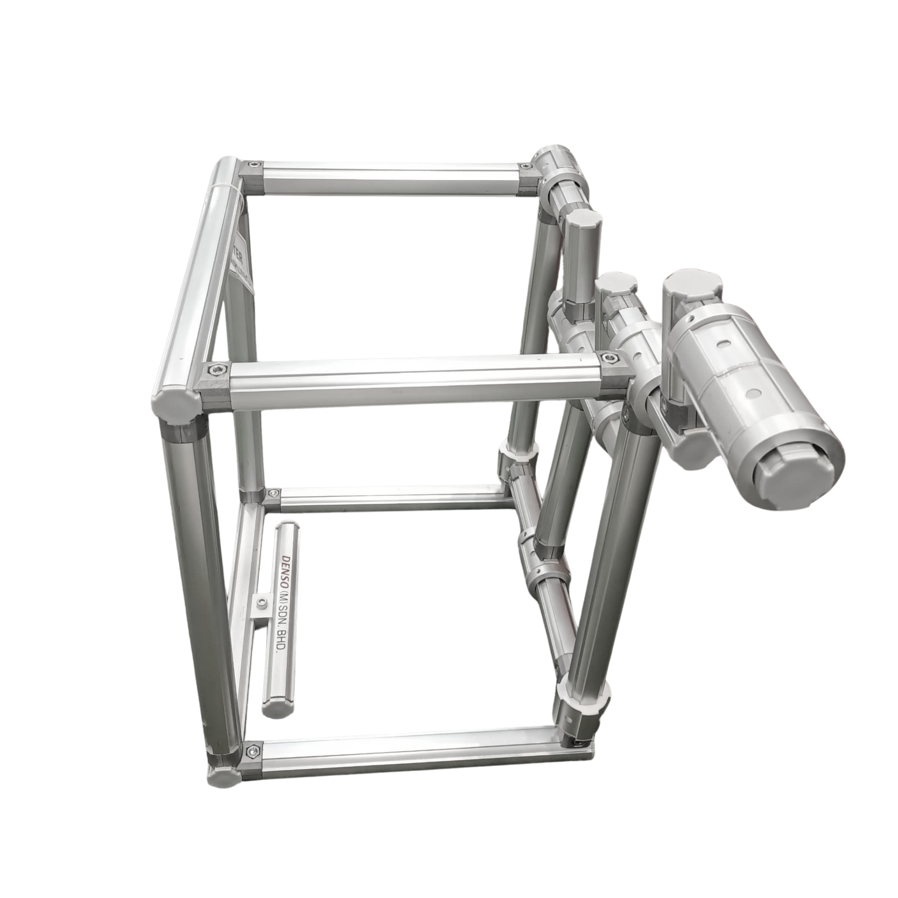

Crank Slider Karakuri
The crank-slider mechanism is a classic system that transforms rotational motion into linear motion. Commonly found in internal combustion engines, this setup plays a major role in Karakuri for moving parts back and forth using just rotary input like a handle or gear.
In Karakuri applications, it's admired for its simplicity and repeatability. Without needing electricity, it can push, pull, or lift objects with rhythm and consistency, making it perfect for lean manufacturing scenarios.
Launch AR